Matsumae
Matsumae · Hokkaido
Matsumae
Highlighted on the Hokkaido map.
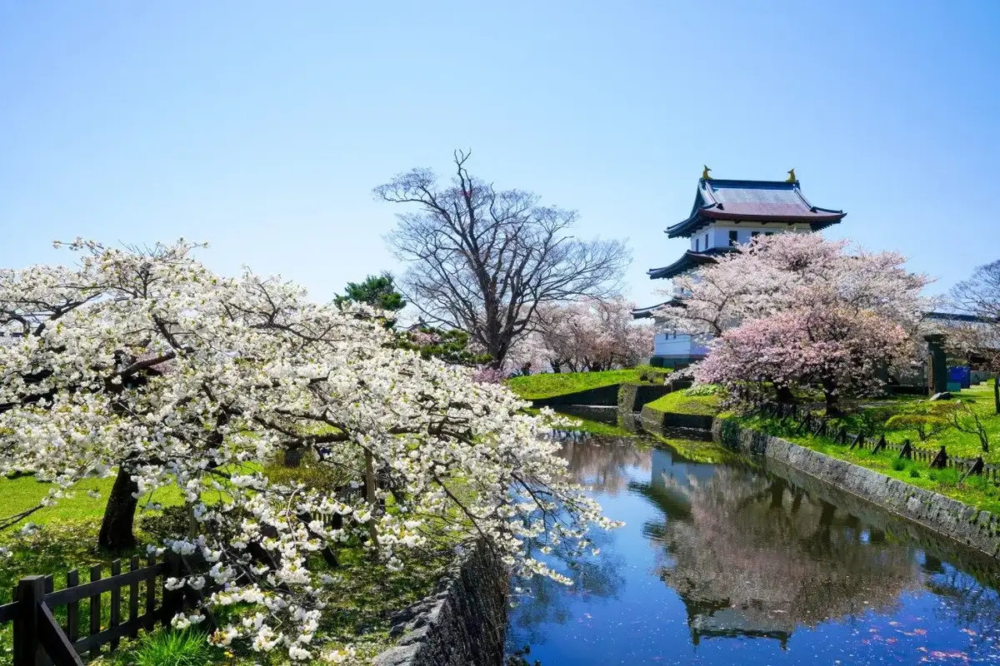
Stay
温泉旅館矢野
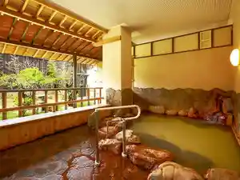
Onsenryokan Yano
Dining
道の駅 北前船 松前
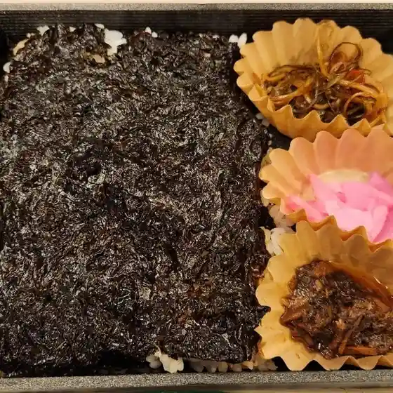
Michi No Eki Kitamae Fune Matsumae
居酒屋 仁
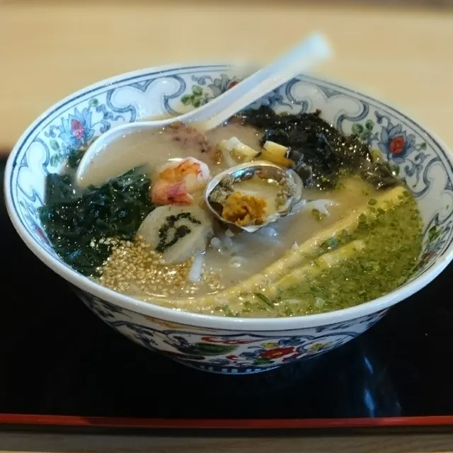
Izakaya Hitoshi
三久 本店
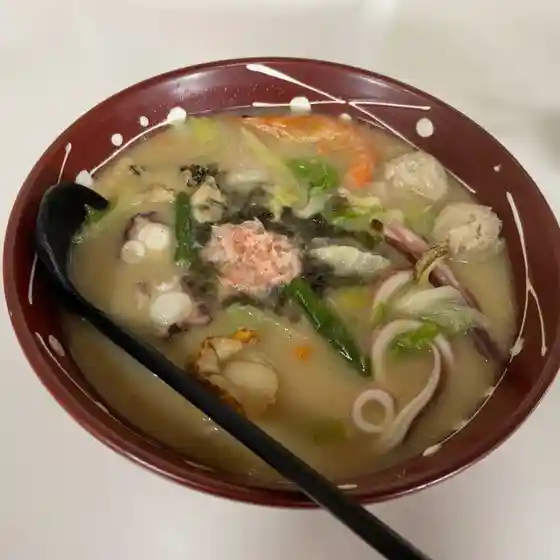
Mitsuhisa Honten
TENOHA cafe 松前
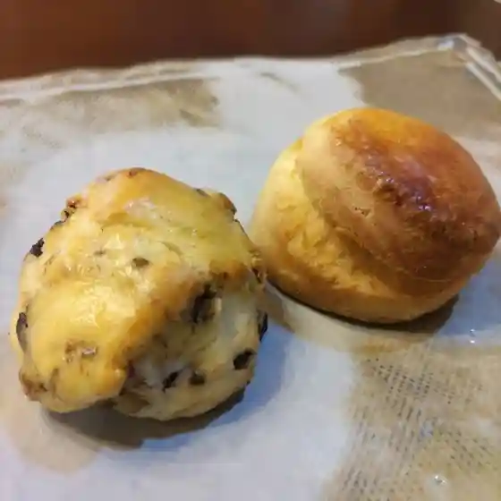
Tenoha Cafe Matsumae
かもめ食堂
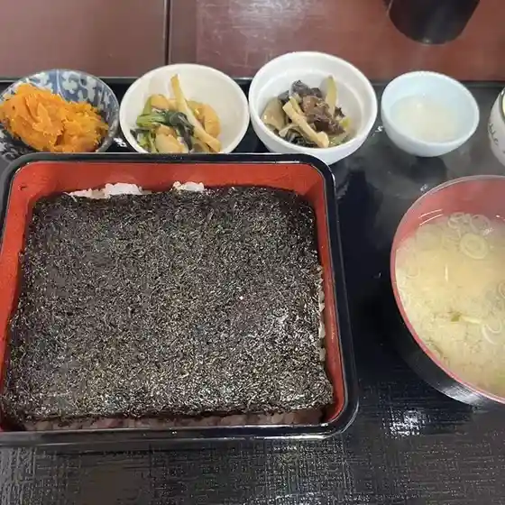
Kamome Shokudou
北前屋
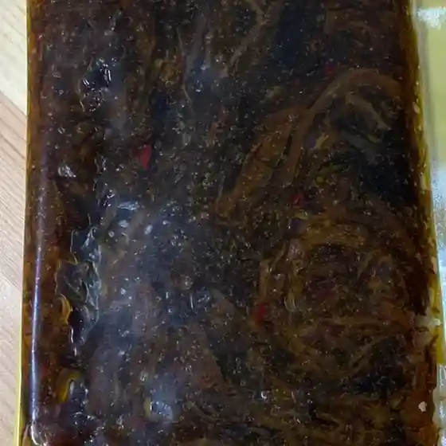
Kitamae Ya
上野屋
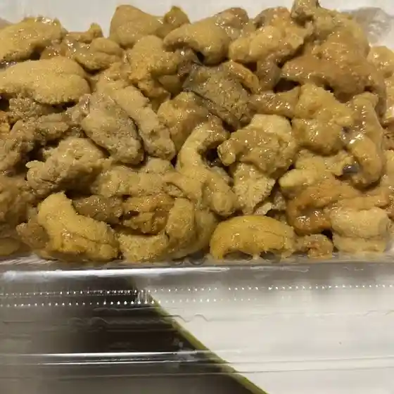
Ueno Ya
LAWSON 松前建石店
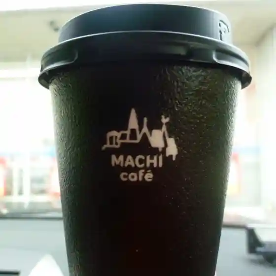
Lawson Matsumae Tateishi Mise
シャトー
Shatoo
敦沢商店
Atsushi Sawa Shouten
松前物産館ヨネタ
Matsumae Bussan Kan Yoneta
中村屋
Nakamuraya
楽
Raku
居見世 茶蔵
Kyo Mise Cha Kura
海魚亭
Umizakana Tei
ラルズマート 松前店
Raruzumaato Matsumae Mise
岬 二代目
Misaki Nidaime
セイコーマート 松前朝日店
Seikoomaato Matsumae Asahi Mise
民宿 いかわ
Minshuku Ikawa
セイコーマート くどう店
Seikoomaato Kudou Mise
うみかぜ食堂
Umikaze Shokudou
丹波屋
Tanba Ya
浦里
Urasato
こはる
Koharu
Sights
Matsumae Park Matsumae Sakura Festival
Matsumae Park Matsumae Sakura Festival
Fukuyama Shiro (Matsumae Shiro)
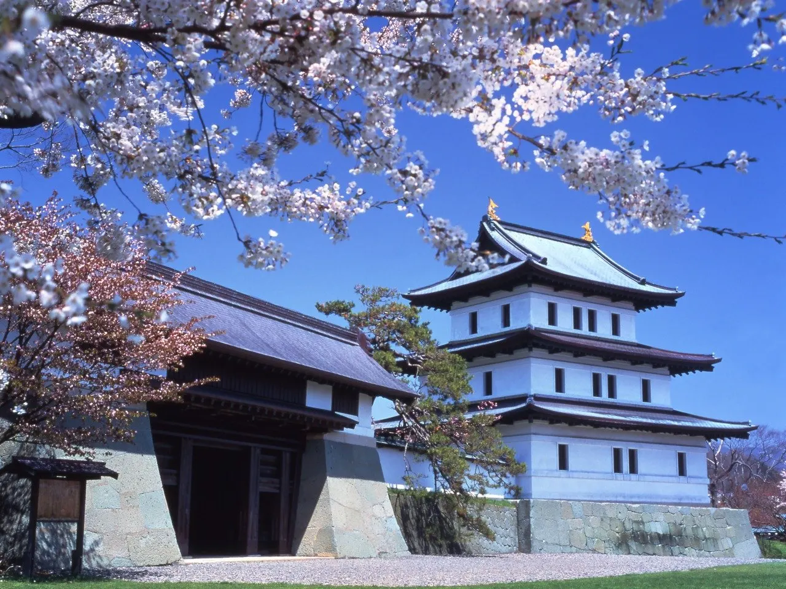
Fukuyama Shiro (Matsumae Shiro)